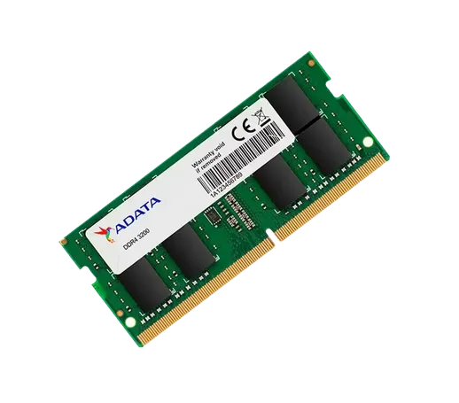

SSD NV2
O NV2 em um SSD proporciona velocidades de leitura/gravação de 2.800MB/s até 3.500MB/s com requisitos de energia reduzidos e menor aquecimento para ajudar a otimizar o desempenho do seu sistema e entregar valor sem sacrifício.

Memória RAM
Esse componente é responsável por dar mais agilidade e velocidade no funcionamento geral do sistema. Sem a memória RAM, tarefas como abrir programas e editar arquivos demorariam muito para serem realizadas. As capacidades mais comuns dos pentes de memória são 4GB, 8GB e 16GB. Porém existem pentes de capacidades muito maiores como os de 32GB ou 64GB.
